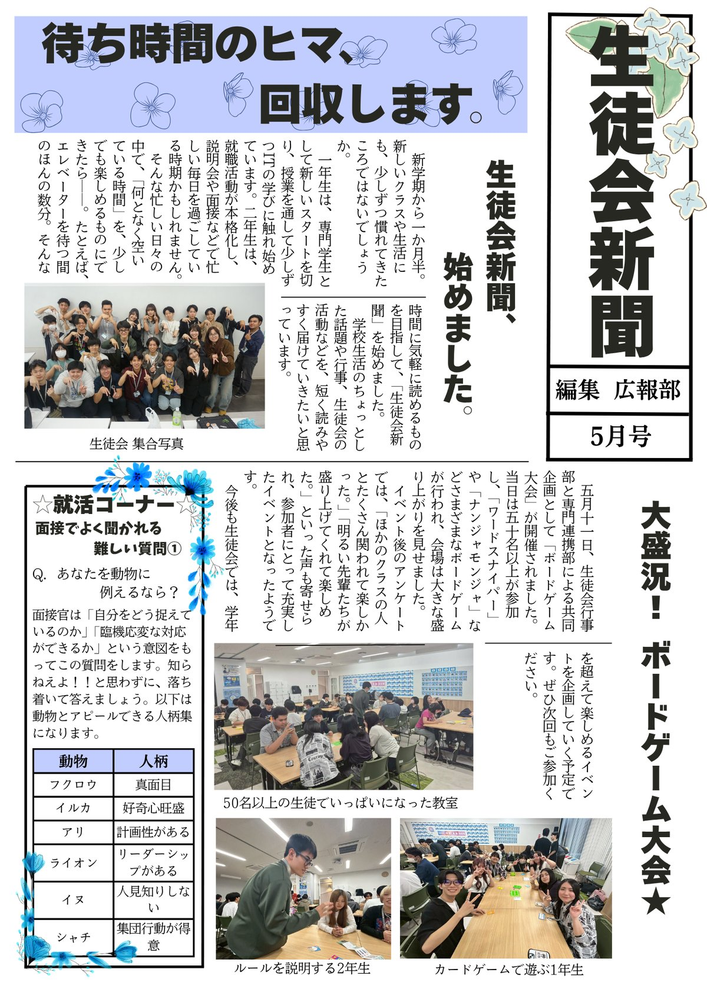
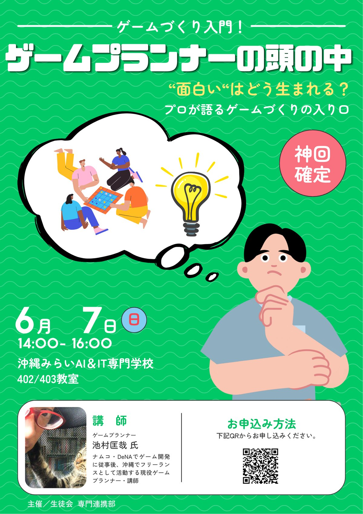
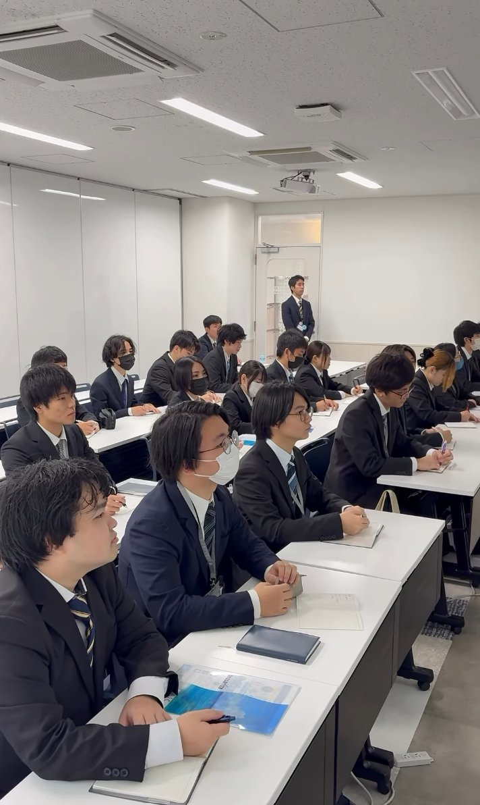
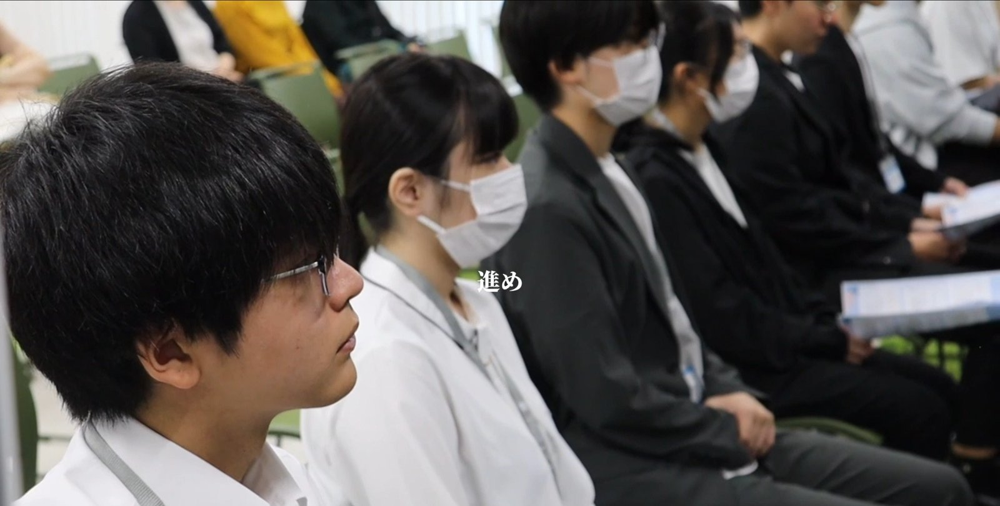
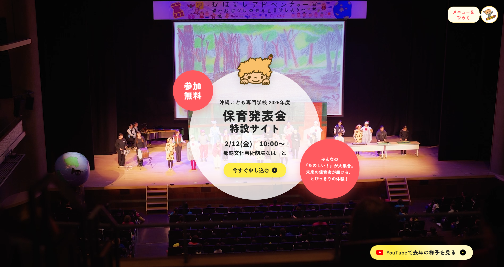

未知の環境を切り拓く行動力
英語がほとんどわからない状態で米軍基地内の高校に転校した際、自ら周囲に話しかけて学び、成績A以上を取れるまでになりました。この経験から物怖じせず、未知の環境でも自分から行動できます。新しい技術や慣れない環境にも積極的に飛び込み、いち早く吸収して力を発揮できる人材を目指します。
presented by
Amy Kalea Schoonover
英語がほとんどわからない状態で米軍基地内の高校に転校した際、自ら周囲に話しかけて学び、成績A以上を取れるまでになりました。この経験から物怖じせず、未知の環境でも自分から行動できます。新しい技術や慣れない環境にも積極的に飛び込み、いち早く吸収して力を発揮できる人材を目指します。
知識を得るだけで終わらせず、アウトプットを重ねて身につくまで学び続けることができます。趣味である韓国語の学習では、単語の暗記だけでなく話す場を求めて講師とのオンライン授業を毎週受講しています。社会に出てからも現状に満足せず、学びと実践を重ねてスキルアップし続ける人材を目指します。
HTML/CSS
JAVA
動画編集

生徒会広報部として、生徒や来賓に学校のイベントや取り組みを広く発信するために制作を始めました。「エレベーターの乗車時間という日常のスキマを、少しでも有意義な情報接点にしたい」という想いから企画した広報誌です。
エレベーター内やエレベーターホールを利用する生徒や先生・来賓

生徒会専門連携部からの依頼で制作した、現役ゲームプランナーによる特別講座の告知ポスターです。校内掲示で思わず足を止めてもらうアイキャッチ力を意識しました。
生徒

1年生にとって初めての就職イベントの様子を記録・発信するために制作しました。参加した1年生の背中を押すような前向きな空気感を表現しつつ、Instagramを通じて高校生や保護者にも学校の取り組みに興味を持ってもらうことを目的としています。

1年生初のチーム開発の集大成である「プログラミング基礎発表会」の様子を伝えるために制作しました。本番の緊張感から発表後の達成感までをリアルに記録し、生徒たちの努力を称えるとともに、学校の活気ある学びの姿勢を発信することを目指しました。

4人チームで姉妹校の保育発表会特設サイトを制作しました。ヒアリングでお伺いした「発表会のテーマに合わせた世界観」と「かわいらしい雰囲気」というご要望をもとに、温かみのある配色やイラストを取り入れて制作しています。閲覧する保護者の方や学生が、発表会のワクワク感を事前に感じられるようなUIを意識しました。